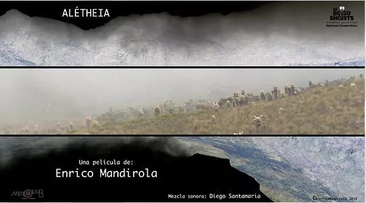

ALÉTHEIA

Alétheia
Full-HD - 9' - Colombia - 2018
Directed by
Enrico Mandirola
!!NATIONAL EXPERIMENTAL COMPETITION!! -- 16 BOGOSHORTS - 2018
The mountain peaks designed a fragmented horizon behind them.
"Myths have the spiritual capacity to connect us with who we are. It is not in vain that they narrate the origin of the world, of time, of mens. Of our habits (weaving), of the space we inhabit (buildings) and of memory (keeping precepts). Space we inhabit (the constructions) and of memory (keeping precepts). There is almost always a being who teaches us how to do it. Who un-veils, perhaps hence the importance of the term alétheia, the way to inhabit the world. Way of inhabiting the world. A space in which the human being is just one more element: I thought all the time, until the revelation of the teachings of the walkers, that they were just any two people walking a path that puts them in contact with a world that is far beyond the human body. I thought all the time that the journey of these two was a pretext to ask ourselves how we travel the world, what are the truths that are revealed to us during our walk when the terrain becomes almost inhospitable and where there is little evidence of human footprints. What a world beyond the human presence!
The myth of the serpents that guard the waters immediately takes us to a reality different from time as we know it: it transports us, on the one hand, to the myth; but, on the other, to a dimension of corporeal presences, that are part of space and that build a spiritual community, without our being able to perceive it, except through the language you propose in the film: silence, contemplation, fog, even the fragmentation of the image, because how can we narrate that which is beyond chronological time."
Valerie Osorio Restrepo